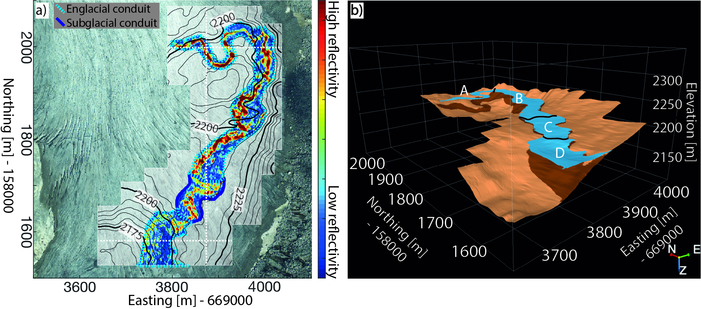

Ground-penetrating radar imaging reveals glacier’s drainage network in 3D
Under Review

Hydrological systems of glaciers have a direct impact on the glacier dynamics.
Since the 1950’s, geophysical studies have provided insights into these hydrological
systems. Unfortunately, such studies were predominantly conducted using 2D
acquisitions along a few profiles, thus failing to provide spatially unaliased 3D
images of englacial and subglacial water pathways. The latter has likely resulted
in flawed constraints for the hydrological modelling of glacier drainage networks.
In this study, I performed and presented results from a 3D ground-penetrating radar (GPR) survey that
provide unprecedented high-resolution 3D images of an alpine glacier’s drainage
network. My results did not only confirm a long-standing englacial hydrology theory
regarding their flow paths around overdeepenings, but they also showed exciting new
opportunities for high-resolution GPR studies of glaciers. With the development of
unmanned aerial vehicles, I think that future 3D GPR surveys will be carried out in a fast and
efficient manner.